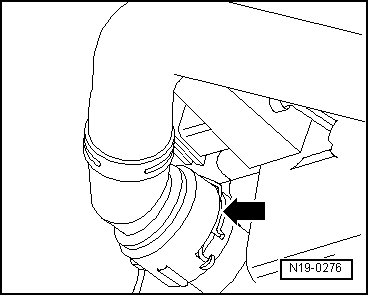
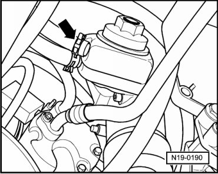
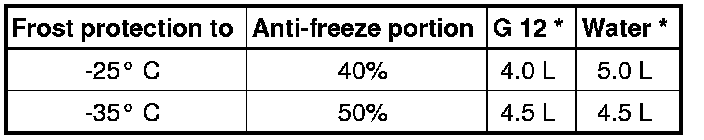
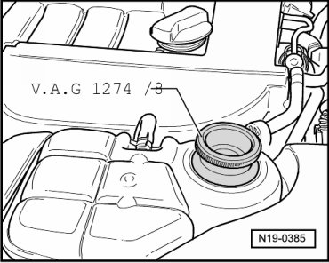

Procedures
Cooling System, Draining and Filling
Special tools, testers and auxiliary items required
• Refractometer (T10007)
• Drip tray (V.A.G 1306)
• Torque wrench (5 to 50 Nm) (V.A.G 1331)
• Spring-type clip pliers (VAS 5024 A)
• Adapter (V.A.G 1274/8)
• Cooling system charge unit (VAS 6096)
Draining
CAUTION!
Hot steam may escape when opening expansion tank. Wear protective goggles and protective clothing to prevent damage to eyes and scalding. Cover cap with a rag and open carefully.
- Open cap on coolant expansion tank.
- Remove noise insulation.
- Pull coolant hose retaining clip - arrow - off downward and remove coolant hose from radiator.

• Observe disposal regulations for coolant!
- In addition, to drain the coolant from the engine, disconnect the coolant hose at the oil cooler - arrow -.

Filling
CAUTION!
Only use tap water for mixing. Well water does not have the quality necessary to ensure proper coolant function.
• Only use coolant additive G 12 plus according to "TL VW 774 F ". Identification: colored violet
• G 12 plus and coolant additives marked: "according to TL-VW 774 F" prevent damage from frost and corrosion, scaling and also raise boiling point. For this reason the system must be filled all year round with frost and corrosion protection additives.
• Because of its high boiling point, the coolant improves engine reliability under heavy loads, particularly in countries with tropical climates.
• Protection against frost must be assured to about -25° C (in arctic climatic countries to about -35° C).
• The coolant concentration must not be reduced by adding water even in warmer seasons and in warmer countries. The coolant additive portion must be at least 40%.
• If for climatic reasons greater frost protection is required, the amount of G 12 plus can be increased, but only up to 60% (frost protection to about -40° C), otherwise frost protection and cooling effectiveness will be reduced.
• If the radiator, heater core, coolant pump or cylinder head gasket was replaced, completely replace the engine coolant.
• Refractometer (T10007) is recommended for determining freeze protection density.
Recommended Mixture Ratios

* The quantity of coolant can vary depending upon the vehicle equipment.
Procedure
- Install coolant hoses and secure.
- Screw adapter (V.A.G 1274/8) onto expansion tank.

- Fill coolant circuit using cooling system charge unit (VAS 6096): --> Operating instructions for cooling system charge unit VAS 6096.